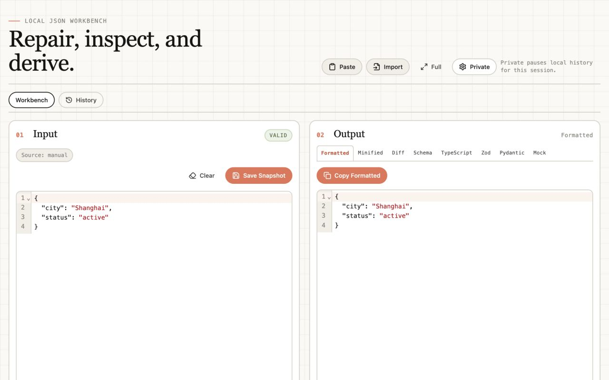

No AI, no telemetry, no remote APIs. Processing stays in the browser.
Fix JSON locally.
Repair messy JSON, format it, and generate JSON Schema, TypeScript, Zod, Pydantic, and semantic mock data without network calls.

Handles common JSON-like input problems and highlights failures in the editor.
Copy schema, TypeScript, Zod, Pydantic, minified JSON, and mock data.